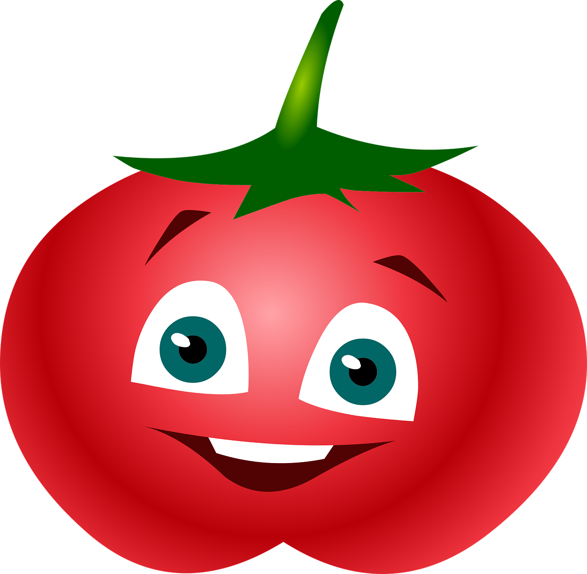

What is that?
The Pomodoro Technique was developed in the late 1980s by then-university student Francesco Cirillo. Cirillo was struggling to focus on his studies and complete assignments. Feeling overwhelmed, he asked himself to commit to just 10 minutes of focused study time. Encouraged by the challenge, he found a tomato (pomodoro in Italian) shaped kitchen timer, and the Pomodoro technique waborn.
